Conheça os 12 Chalés do Acampamento Meio-Sangue
Dos santuários dos Três Grandes às moradias das divindades olímpicas. Descubra a história, as características únicas e os símbolos de cada um dos 12 chalés onde os semideuses habitam e treinam no acampamento.
Os 12 Chalés:
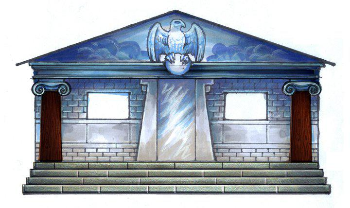
Chalé 1 — Zeus
Santuário de mármore adornado com colunas imponentes e um teto que simula céus tempestuosos. Transmite uma aura de poder e liderança, sendo a morada dos filhos do Rei dos Deuses.
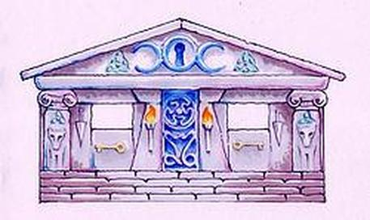
Chalé 2 — Hera
Estrutura honorária de mármore branco decorada com entalhes de pavões e romãs. Permanece sempre limpo e vazio, respeitando a posição de Hera como Rainha dos Deuses e guardiã do casamento.
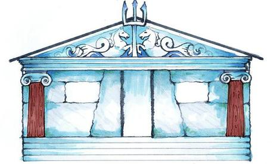
Chalé 3 — Poseidon
Construído com rochas do fundo do mar e conchas reluzentes. Exala o aroma do oceano, possui fontes de água corrente e guarda a energia serena e tempestuosa do Senhor dos Mares.
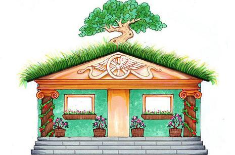
Chalé 4 — Deméter
Coberto por flores coloridas, vegetação viva e um teto de relva. As suas janelas são decoradas com ramos de trigo, refletindo a harmonia com a natureza e a fartura da colheita.
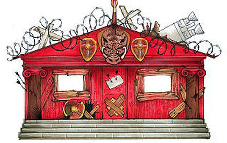
Chalé 5 — Ares
Pintado num tom vermelho vivo e guardado por uma cabeça de javali sobre a porta. Transmite uma atmosfera intimidadora e guerreira, equipado para os amantes da força bruta e do combate.
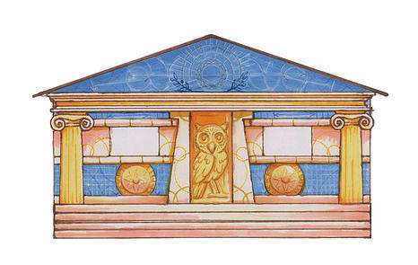
Chalé 6 — Atena
Construção branca e organizada, repleta de prateleiras de livros, mapas de batalha, maquetes de arquitetura e mesas de planeamento. É o centro da estratégia e da sabedoria do acampamento.
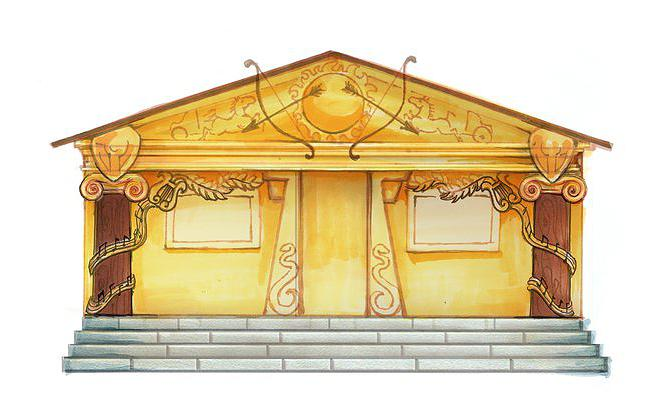
Chalé 7 — Apolo
Revestido num material dourado que brilha intensamente sob a luz do sol. O seu interior está cheio de instrumentos musicais, arcos de precisão e suprimentos médicos.
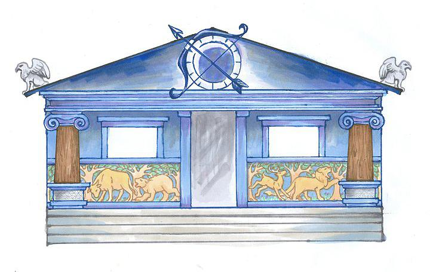
Chalé 8 — Ártemis
Feito de prata acinzentada que emite um brilho suave durante a noite. Serve de alojamento temporário e santuário para as Caçadoras de Ártemis quando visitam o acampamento.
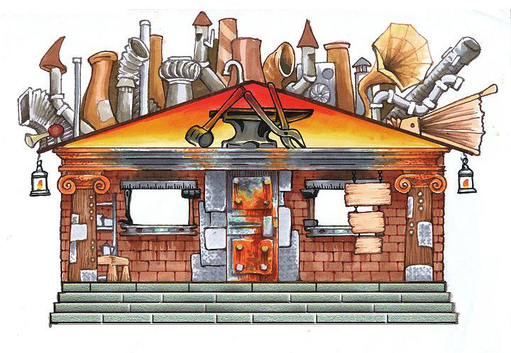
Chalé 9 — Hefesto
Estrutura robusta equipada com chaminés fumegantes, engrenagens visíveis e uma oficina completa onde são forjadas as armas de bronze celestial e engenhos mecânicos.
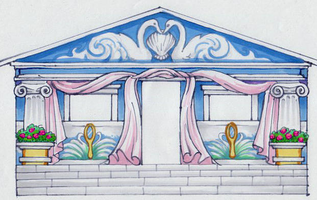
Chalé 10 — Afrodite
Com paredes num tom rosa suave, cortinas de seda e um aroma permanente de rosas e perfumes. O seu interior é decorado com espelhos elegatíssimos e áreas de descanso.
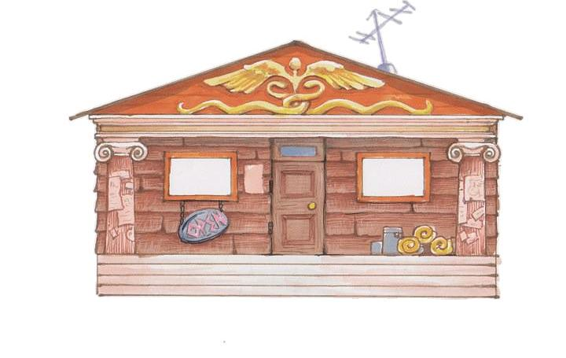
Chalé 11 — Hermes
O chalé mais antigo e movimentado, marcado pelo caduceu na porta de entrada. Conhecido pela sua hospitalidade, acolhe tanto os filhos de Hermes como os semideuses ainda não reivindicados.
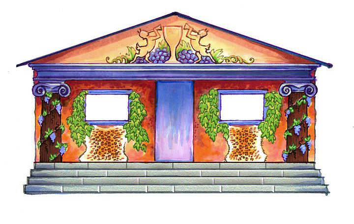
Chalé 12 — Dionísio
Enfeitado com videiras frondosas repletas de uvas frescas e vasos de plantas ornamentais. Transmite uma atmosfera descontraída e festiva, inspirada pelo Deus do Vinho e da Celebração.
| Nº | Chalé / Deus | Conselheiro Chefe | Símbolo |
|---|---|---|---|
| 01 | Zeus | Jason Grace / Thalia | Raio |
| 02 | Hera | Ninguém (Honorário) | Pavão / Romã |
| 03 | Poseidon | Percy Jackson | Tridente |
| 04 | Deméter | Katie Gardner | Espiga de Trigo |
| 05 | Ares | Clarisse La Rue | Cabeça de Javali |
| 06 | Atena | Annabeth Chase | Coruja |
| 07 | Apolo | Will Solace | Lira / Sol |
| 08 | Ártemis | Caçadoras de Ártemis | Arco e Lua Crescente |
| 09 | Hefesto | Leo Valdez / Beckendorf | Martelo e Engrenagem |
| 10 | Afrodite | Piper McLean / Silena | Pomba e Espelho |
| 11 | Hermes | Luke Castellan / Irmãos Stoll | Caduceu |
| 12 | Dionísio | Pollux / Castor | Cacho de Uvas / Videira |
Quer Saber Qual Seu Chalé Também?
Clique no Link, Faça o Quiz e Descubra!
Quiz Chalés